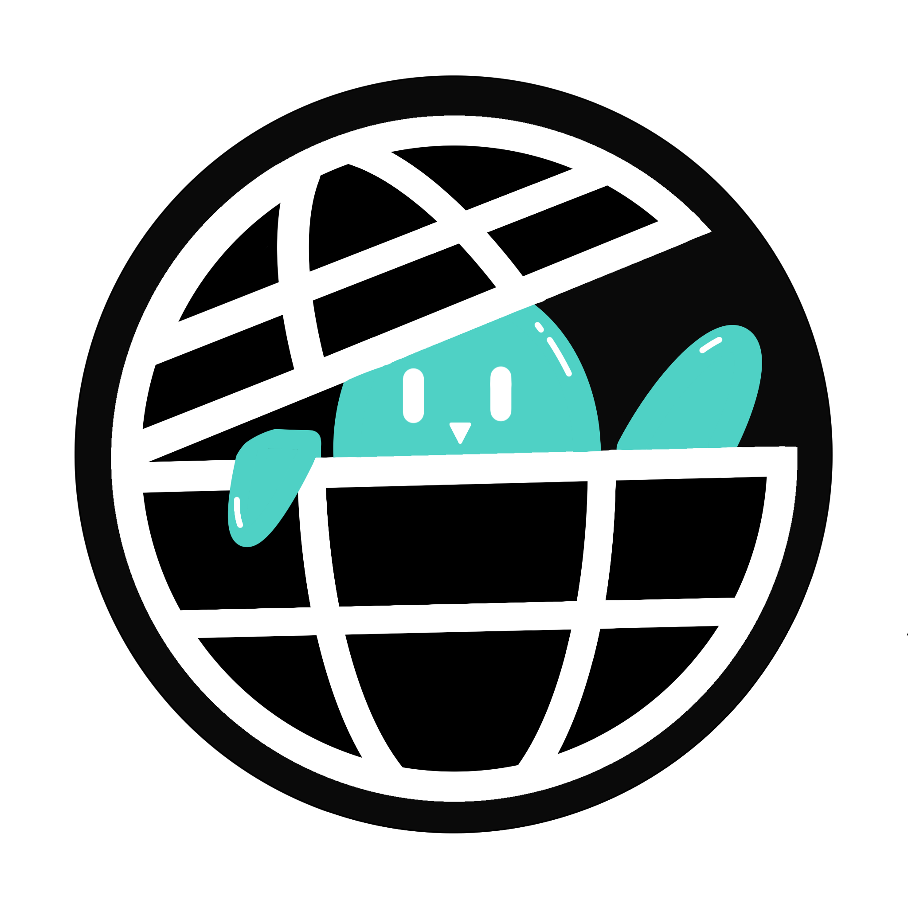

待機中

本サイトでは、Web上でさまざまなAIをローカルで動かすことができます。
まずはモデル名をタップしてモデルを選択してみましょう。もう一度押すことでダウンロードが始まります。
Smollm,LFMなどが特に軽量なモデルです。
MLCと書いてあるモデルは、古いOSや端末では動かない場合があります。(WebGPUを使用するため)
反対に、GGUFと書かれているモデルは比較的古い端末でも動く可能性があります。 まずはLFM2.5 350Mをダウンロードすることをおすすめします。
余裕があったら多言語対応のQwenシリーズなどもオススメです。
また、自分の端末から直接モデルファイルをアップロードすることもできます。